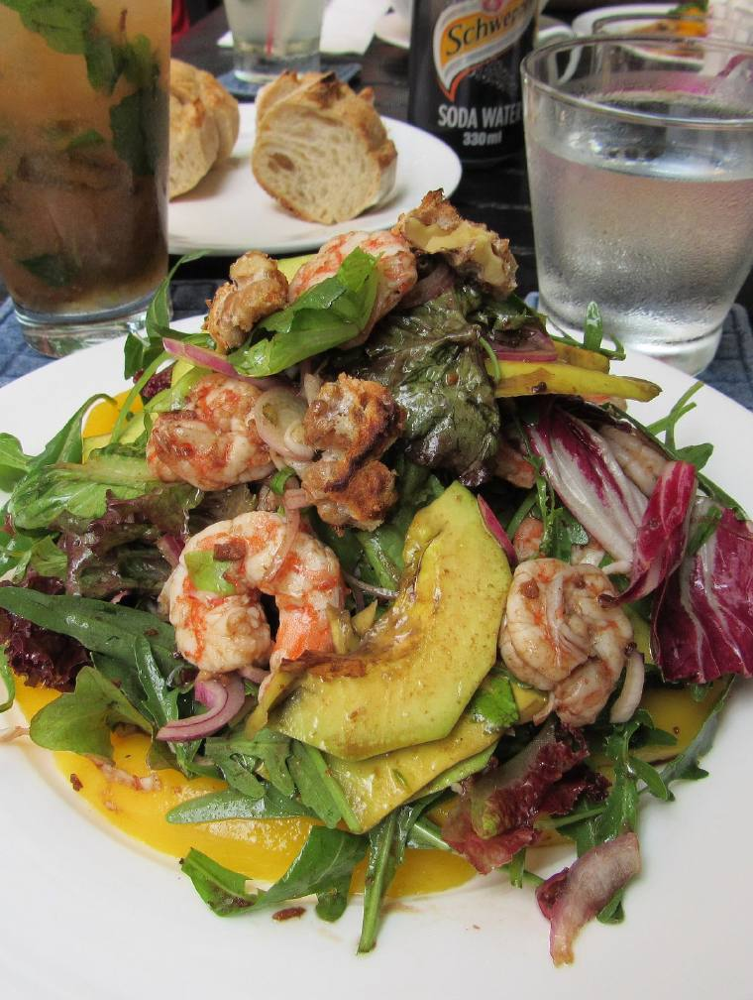

Entrées

Entrées
Salade de crevettes, mangue et pamplemousse
Préparation : 20 min
Ingrédients (pour 3 personnes)
- 15 crevettes cuites
- 1 petite mangue
- 1 avocat
- 1 pamplemousse
- 1 citron vert
- ½ oignon rouge
- menthe, huile d’olive, sel, poivre
- mesclun et graines de sésame
Quantités adaptées. Les temps de cuisson ne sont pas recalculés.
- Décortiquer les crevettes, les couper en tronçons de 2 cm.
- Prélever les segments du pamplemousse, couper mangue et avocat en cubes, hacher l’oignon.
- Réunir, ajouter zeste de citron vert, huile, menthe, sel et poivre, mélanger délicatement.
- Dresser au cercle sur le mesclun, parsemer de sésame.
D’après une recette des vignerons de Plaimont. Texte reformulé.